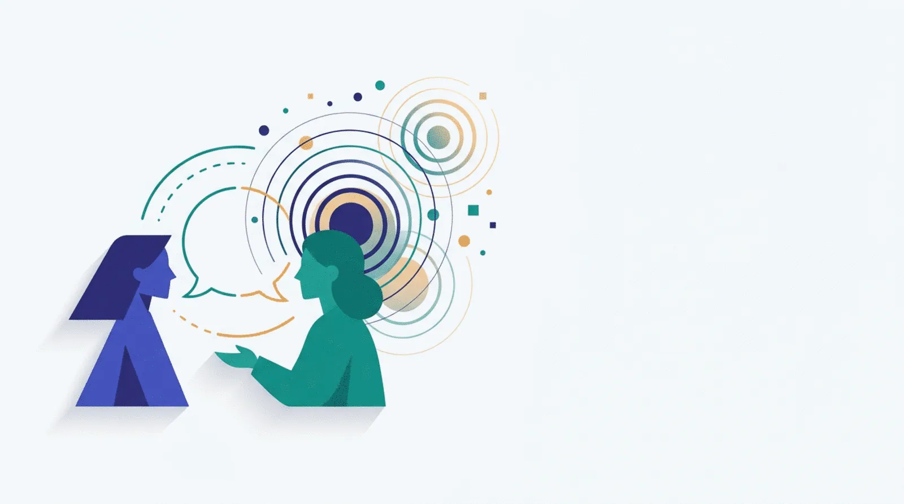

Ce este coachingul, pe înțelesul tuturor
Dacă nu habar n-ai de coaching, ești în locul bun. Aici afli ce este, ce NU este, de unde a apărut, unde se folosește concret, cum arată o sesiune, ce competențe stau la baza meseriei și care sunt limitele etice — înainte să dai vreun ban sau să te înscrii la vreun curs.

01Ce este coachingul
Coachingul este o conversație profesională, structurată, orientată spre viitor, în care clientul își clarifică un obiectiv și își construiește propriul drum spre el. Coach-ul nu dă soluții: pune întrebări, ascultă, reflectă și ține cadrul.
Parteneriat cu clienții, într-un proces care provoacă gândirea și creativitatea, pentru a-i inspira să își maximizeze potențialul personal și profesional.
O relație de dezvoltare, non-directivă, în care coach-ul sprijină clientul să își găsească propriile răspunsuri; clientul deține agenda, coach-ul deține procesul. EMCC pune accent puternic pe reflecție și supervizare.
Coachingul este reglementat ca ocupație: Specialist în activitatea de coaching, cod COR 242412. Certificatul atestă competențe conform standardului ocupațional și se obține după un program autorizat + examen.
Trei idei care explică tot mecanismul
- Clientul este expertul. Tu știi contextul, valorile și constrângerile. Coach-ul este expert pe proces — pe cum se pune o întrebare bună și cum se ține un cadru.
- Prezent → viitor. Coachingul nu repară trecutul; pornește din realitatea de azi și construiește următorul pas. Trecutul e folosit doar ca sursă de tipare, nu ca teren de tratament.
- Responsabilitate, nu dependență. Semnul unui proces bun este că la final ai nevoie mai puțin de coach, nu mai mult. De aceea există un început, un mijloc și un sfârșit asumat.
Performanța nu vine din a adăuga ceva, ci din a îndepărta ce te blochează. Ideea centrală din The Inner Game (W. Timothy Gallwey, 1974)
02Ce NU este coachingul (și de ce contează)
Cinci profesii se suprapun și sunt constant confundate. Diferența nu e academică: alegerea greșită înseamnă luni pierdute și bani aruncați.
| Dimensiune | Coaching | Terapie | Mentoring | Consultanță | Training |
|---|---|---|---|---|---|
| Direcția timpului | prezent → viitor | trecut → prezent | experiență trecută | viitor (soluție) | viitor (competență) |
| Cine stabilește agenda | clientul | cadrul clinic | mentorul | beneficiarul | programa |
| Oferă soluții? | Nu | Rar, tehnic | Da — din experiență | Da — livrabil | Da — conținut |
| Tratează suferință clinică? | Nu | Da | Nu | Nu | Nu |
| Livrabilul concret | claritate + acțiune asumată | ameliorare / vindecare | sfat + rețea | analiză + recomandare | competență verificată |
| Reglementare | voluntară (ICF/EMCC) + ocupațională (RO) | profesie reglementată | nereglementat | contract comercial | autorizare furnizor (RO) |
03De unde vine coachingul
Coachingul modern e o împletire de psihologie umanistă, psihologie sportivă și practică de business. Are 50 de ani — suficient cât să aibă standarde, prea puțin cât să fie uniform reglementat.
The Inner Game
W. Timothy Gallwey publică The Inner Game of Tennis și formulează ecuația care stă la baza coachingului: performanță = potențial − interferență. Ideea că adversarul din mintea ta e mai puternic decât cel de peste fileu migrează rapid din sport în business.
GROW și primele școli
John Whitmore publică Coaching for Performance și popularizează modelul GROW. În același an, Thomas Leonard fondează Coach U (prima școală mare de coaching), iar David Megginson și David Clutterbuck pun bazele EMC — viitorul EMCC.
Se naște ICF
Thomas Leonard fondează International Coach Federation, organizația care avea să devină principalul standard global de credentialare. Azi, ICF este cel mai mare organism de profil din lume.
EMC devine EMCC
Organizația europeană, fondată în 1992 în jurul mentoringului, își schimbă numele în European Mentoring and Coaching Council și devine al doilea pol de credentialare, cu tradiție puternică în supervizare și practică reflexivă.
Coachingul devine ocupație în România
Ocupația Specialist în activitatea de coaching este recunoscută oficial, cu cod COR 242412. Standardul ocupațional curent este valabil 2024–2034. De aici înainte, în România există și cale legală (ANC), nu doar cale profesională (ICF/EMCC).
Modelul de competențe ICF
ICF lansează modelul cu 8 competențe (2019, intrat în vigoare progresiv din 2021) și îl actualizează în 2025, împreună cu Codul etic. Modelul devine referința după care se construiesc programele și se evaluează performanța.
Anii în care se schimbă regulile
10 noiembrie 2026: noul examen ICF PCC/MCC — 80 de itemi / 150 de minute, pe competențele și codul etic 2025 (varianta veche rămâne până la 31 martie 2027). 1 ianuarie 2027: orele noi de mentor coaching trebuie livrate de un coach cu MCS.
04Unde se folosește coachingul
Coachingul nu e o meserie, e o metodă aplicată în contexte foarte diferite. Asta explică de ce „coach” singur nu spune nimic: specializarea contează mai mult decât diploma.
Executive & leadership
Tranziții de rol, decizii cu miză mare, prezență executivă, delegare, relația cu boardul.
Carieră
Reconversie profesională, claritate, negociere, revenire după concediu sau burnout.
Echipă
Aliniere, conflict, claritatea rolurilor, performanță colectivă, integrarea unui lider nou.
Life coaching
Relații, energie, priorități, identitate, tranziții personale. Atenție: aici apar cele mai multe practici nereglementate.
Sănătate & wellbeing
Schimbare de stil de viață, aderență la tratament, prevenirea burnoutului — în limitele rolului, fără a înlocui medicul.
Educație & academic
Coaching pentru elevi/studenți, dezvoltare de carieră universitară, coaching între colegi (peer coaching).
Sport
Rădăcina istorică a metodei: pregătire mentală, concentrare, revenire după accidentare, rutine de performanță.
Antreprenoriat
Claritate strategică, decizii de creștere, gestionarea singurătății fondatorului, echipă mică.
05Cum arată, concret, o sesiune
O sesiune standard durează 45–60 de minute și are o structură recognoscibilă. Fără structură, o conversație plăcută rămâne doar atât.
Check-in
Cu ce vii azi? Starea, energia, ce s-a întâmplat de la ultima întâlnire.
Contractare
Stabilim subiectul și ce înseamnă „a mers” la finalul sesiunii.
Explorare
Realitatea, opțiunile, valorile, presupunerile. Coach-ul ascultă la niveluri diferite.
Insight
Apare noul unghi: vezi ceva ce nu vedeai înainte, inclusiv despre tine.
Angajament
Acțiuni datate, primul pas concret, obstacole anticipate.
Follow-up
Ședința următoare începe cu ce ai făcut — nu cu ce n-ai făcut.
06Modelele de lucru (schele, nu rețete)
Modelele sunt utile începătorilor și invizibile la experți: cu cât ești mai bun, cu atât mai puțin se vede structura. Iată cele mai folosite.
Cel mai cunoscut
Whitmore, din psihologia sportivă. Simplu, robust, bun pentru început.
- Goal — obiectivul sesiunii
- Reality — realitatea de azi
- Options — variante, fără cenzură
- Will / Way forward — voință și următorul pas
Cu topic explicit
Adaugă un pas zero: alegerea subiectului, înainte de obiectiv.
- Topic
- Goal
- Reality
- Options
- Way forward
Orientat pe soluții
Bun în contexte corporate, unde clientul vine blocat pe problemă.
- Outcome
- Situation
- Choices & consequences
- Actions
- Review
Centrat pe ascultare
Pune contractul și ascultarea înaintea explorării — mai aproape de etosul ICF.
- Contract
- Listen
- Explore
- Action
- Review
Pentru manageri
Gândit pentru conversații scurte, integrate în munca zilnică.
- Frame
- Understand
- Explore
- Lay out a plan
Modelul co-activ
Nu e un acronim, e o filozofie: clientul este creativ, ingenios și întreg; coachingul lucrează pe agendă, valori și responsabilitate.
- Fondul: încredere și intimitate
- Ascultare profundă + întrebări directe
- Auto-conștientizarea coach-ului
07Cele 8 competențe ICF (modelul actual)
Acestea sunt criteriile după care ești evaluat la certificare și, mai important, după care se vede diferența dintre un amator simpatic și un profesionist. Le regăsești aplicat în programele de coaching individual.
Practică etică
Cunoaște și aplică codul etic: confidențialitate, granițe, conflicte de interes, integritate în promisiuni.
Mentalitate de coaching
Curiozitate autentică, toleranță la nesiguranță, conștientizare de sine și reflecție continuă.
Acorduri clare
Contractează parteneriatul: cadru, roluri, scop, măsurarea progresului, reguli de încheiere.
Încredere și siguranță
Creează spațiul în care clientul poate spune lucruri pe care nu le-a spus nimănui.
Prezență
Ești complet acolo: flexibil, atent la ce se întâmplă în sală, capabil de tăcere.
Ascultare activă
Auzi ce spune, ce nu spune, cum spune și ce se întâmplă sub cuvinte — apoi reflectezi esența.
Conștientizare provocată
Întrebări, tăceri, metafore și observații care produc insight — nu explicații.
Facilitarea creșterii
Din insight se trece în acțiune: obiective, responsabilitate, învățare transferabilă și încheierea procesului.
08Etică, confidențialitate și limite
Cadrul etic nu e birocrație: e singurul lucru care face coachingul sigur pentru cineva vulnerabil.
- Confidențialitatea. Ce se discută rămâne între voi, cu excepțiile asumate din contract (supervizare, obligație legală, risc de vătămare).
- Consimțământ informat. Clientul știe ce este coachingul, ce nu este, cât durează, cât costă și cum poate opri procesul.
- Granița de competență. Când problema depășește rolul (clinic, legal, financiar, medical), trimiți mai departe. Refuzul e un act profesional, nu un eșec.
- Conflicte de interes. Când organizația plătește, clientul este persoana — dar cine are dreptul la informație trebuie lămurit din contract.
- Supervizarea. Un coach serios își examinează practica periodic cu un supervizor. Nu e semn de slăbiciune, e standardul profesional (obligatoriu la EMCC, recomandat ferm de ICF).
09Mituri și realitate
Coachingul are o problemă de marketing: e vândut ca terapie ieftină, ca soluție magică sau ca hobby. Iată realitatea, pe scurt.
10Ce spune cercetarea
Coachingul are evidențe solide în contexte organizaționale, cu o rezervă importantă: mare parte din studii se bazează pe auto-raportare, iar calitatea metodologică variază mult.
- Cele mai documentate efecte: performanță la locul de muncă, atingerea obiectivelor, autoreglare, încredere în sine, wellbeing și capacitatea de a face față schimbării.
- Ce contează mai mult decât metoda: calitatea relației (alianța de lucru), claritatea contractului și angajamentul real al clientului — factori comuni tuturor abordărilor serioase.
- Unde dovada e mai slabă: măsurarea ROI-ului la nivel de organizație și efectele pe termen lung (peste 12 luni) — aici literatura este încă fragmentată.
| Afirmație | Efect / cifră | Sursă (an, eșantion) |
|---|---|---|
| — de completat — | — | — |
| — de completat — | — | — |
| — de completat — | — | — |